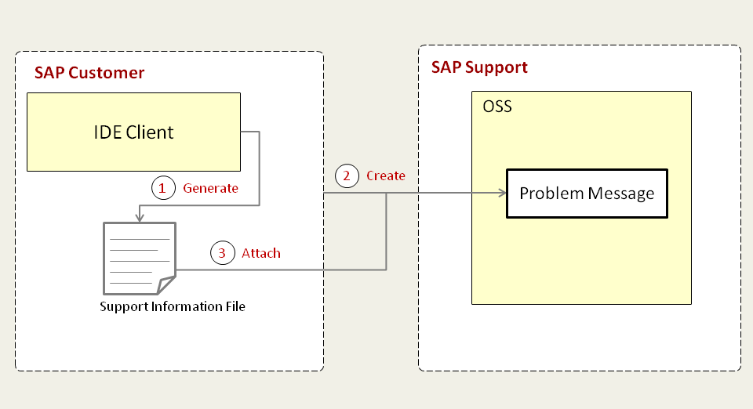

Providing Information for SAP Support
The following figure outlines the components and main activities involved when providing information for the troubleshooting process.

Figure: Process Overview
Relevant SAP customer activities:
- Creating a Support Information File
- Creating the OSS Problem Message
- Adding Support Information File to the OSS Problem Message
- [Optional - ] Extending the Support File to Include Additional Information.